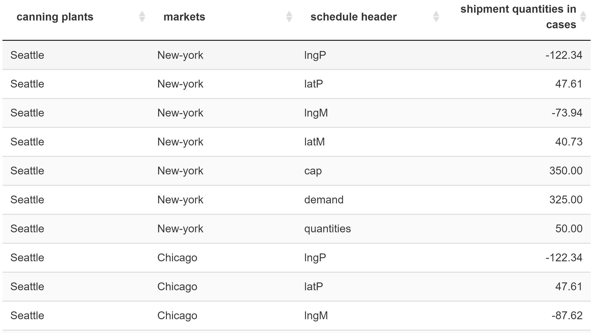
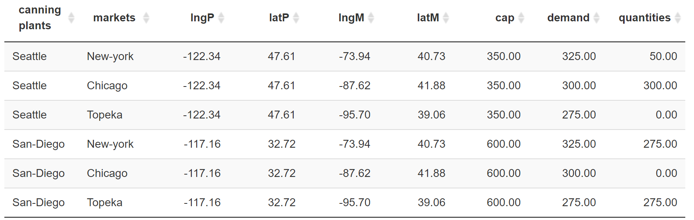
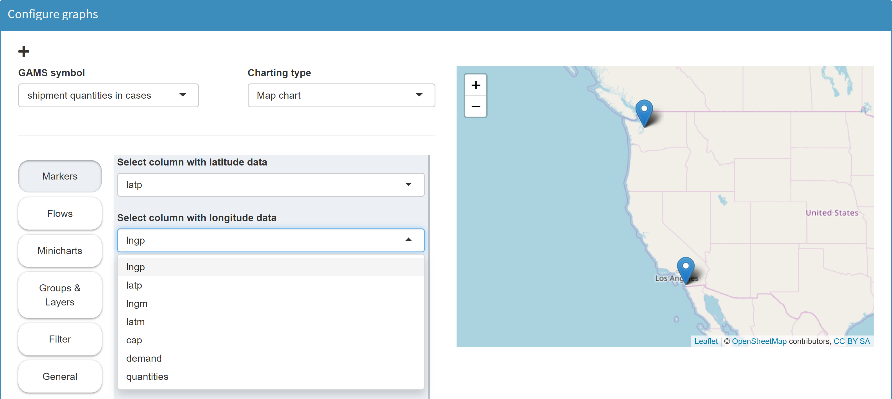
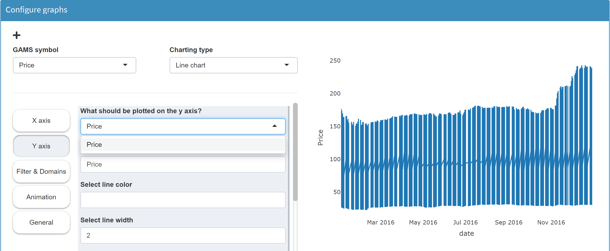
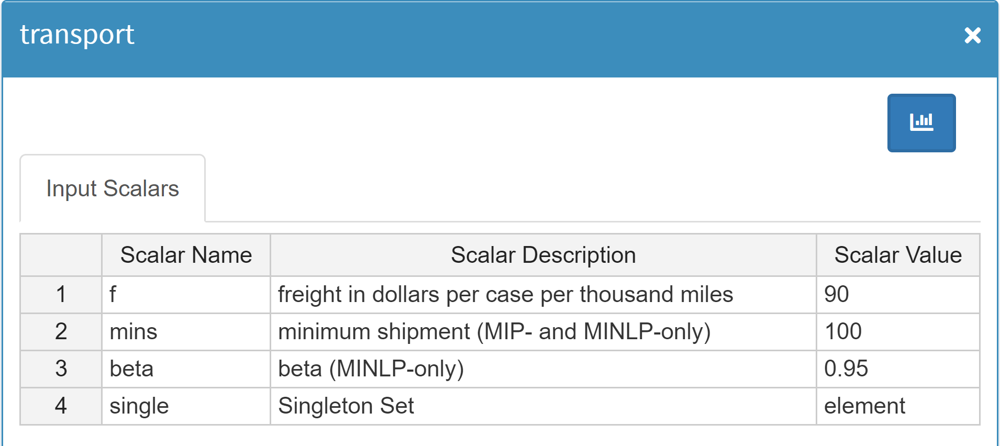
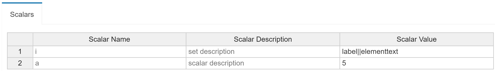
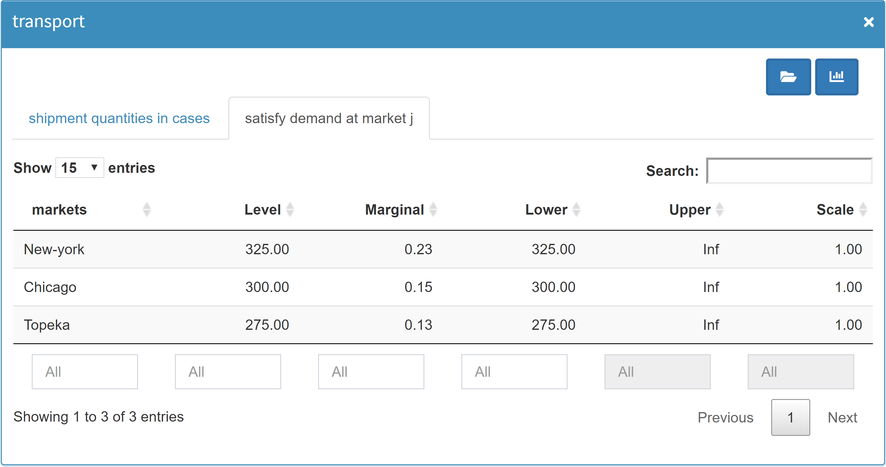
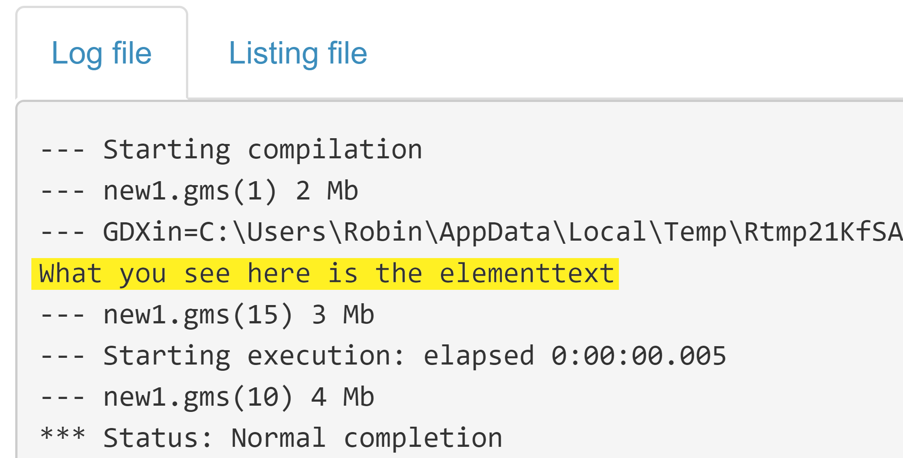

MIRO specific files and directories (conf_<modelname>, data_<modelname>, static_<modelname>, renderer_<modelname>, scripts_<modelname> and <modelname>_files.txt) must be lower case!
Model preparation
Introduction
Let's now turn a GAMS model into a MIRO app. When developing GAMS MIRO, we focused on automating this process and making it possible with very few adjustments to your model. In order to get started, it's a good idea to have a look at the GAMS code of the demo applications.
The model transport is one of these demo applications that come with your GAMS MIRO installation. However, for illustration purposes we now take the original trnsport.gms model from the GAMS Model Library.
If you want to join us in going step by step from the "raw" model to our first MIRO app, download the corresponding file from the Model Library and put it in a directory of your choice.
Case sensitivity:
Turn your GAMS model into a GAMS MIRO app
Model adjustments
Every GAMS model can be deployed with MIRO in just a few
steps. First, those GAMS symbols that you want to be
visible in the interface need to be declared. This can be
done by wrapping the corresponding
symbol declarations with the tags
$onExternalInput /
$offExternalInput for
input data and
$onExternalOutput /
$offExternalOutput for
output data. These tags can be used multiple times within
a model. Symbols which are not tagged won’t be visible in
the web interface.
The code below shows a small example:
$onExternalInput
Parameter
symbol_1(dim1, dim2) 'Displayed in MIRO (model input data)'
symbol_2(dim3) 'Displayed in MIRO (model input data)';
$offExternalInput
Parameter
symbol_3(dim4) 'NOT displayed in MIRO';
Here, the parameters
symbol_1 and
symbol_2 are declared between
the tags
$onExternalInput and
$offExternalInput .
They will be visible in MIRO (e.g. as tables).
symbol_3, on the other hand, was declared outside the keywords.
This parameter will not be visible in MIRO (however, of
course it is still available as a GAMS symbol in your
model).
The following GAMS symbols can be used in GAMS MIRO:
- Sets
- Parameters / Tables
- Scalars
- Singleton Sets
- Variables (output only)
- Equations (output only)
- GAMS Options
- Double dash parameters
The configuration of GAMS Options and double dash parameters differs from the other symbols. Learn more about this here.
File encoding:

Your GAMS model files need to be encoded with UTF-8. In GAMS Studio you can change the encoding of your file via Edit → Encoding → convert to ... → UTF-8. Other file encodings are not supported in GAMS MIRO!
Example:
Let's try this for the model
trnsport now. This is what the input data section
of the model looks like when we have loaded it from the
GAMS Model Library:
Set
i 'canning plants' / seattle, san-diego /
j 'markets' / new-york, chicago, topeka /;
Parameter
a(i) 'capacity of plant i in cases'
/ seattle 350
san-diego 600 /
b(j) 'demand at market j in cases'
/ new-york 325
chicago 300
topeka 275 /;
Table d(i,j) 'distance in thousands of miles'
new-york chicago topeka
seattle 2.5 1.7 1.8
san-diego 2.5 1.8 1.4;
Scalar f 'freight in dollars per case per thousand miles' / 90 /;
Parameter c(i,j) 'transport cost in thousands of dollars per case';Let's import some of the data from MIRO, namely the parameters a, b and d as well as the scalar f. In order to tell MIRO that you want these symbols to come from there, we now flag them with the mentioned annotations in the symbol declarations:
Set
i 'canning plants' / seattle, san-diego /
j 'markets' / new-york, chicago, topeka /;
$onExternalInput
Parameter
a(i) 'capacity of plant i in cases'
/ seattle 350
san-diego 600 /
b(j) 'demand at market j in cases'
/ new-york 325
chicago 300
topeka 275 /;
Table d(i,j) 'distance in thousands of miles'
new-york chicago topeka
seattle 2.5 1.7 1.8
san-diego 2.5 1.8 1.4;
Scalar f 'freight in dollars per case per thousand miles' / 90 /;
$offExternalInput
There's one thing that needs to be considered here: We have decided to display the parameter a with the index i in MIRO and the parameter b with the index j. It is therefore possible for us to make changes to the elements of i and j from within MIRO (i.e. modify the elements of i and/or j). However, as we declared i and j outside of the $on-/offExternalInput tags, we would get domain violations if we were to modify the set elements! To get around this problem, we will use the < operator:
Set
i 'canning plants'
j 'markets';
$onExternalInput
Parameter
a(i<) 'capacity of plant i in cases'
/ seattle 350
san-diego 600 /
b(j<) 'demand at market j in cases'
/ new-york 325
chicago 300
topeka 275 /;
[...]
$offExternalInput
This < operator causes the sets i and j to be defined implicitly via the parameters a and b (see also here). Alternatively, we could declare the first column of the tables a and b to be readonly in order to prevent domain violations.
In addition, we want MIRO to display the variables of the model. To do so, we simply tag the declaration statement of the variables:
$onExternalOutput
Variable
x(i,j) 'shipment quantities in cases'
z 'total transportation costs in thousands of dollars';
$offExternalOutput
Positive Variable x;
[...]That's it. We defined both input and output data for use in MIRO. If you use GAMS Studio, the model is now ready to be launched in MIRO. If you use the command line instead, please follow these steps before starting MIRO.
Launch MIRO
To launch MIRO from within GAMS Studio, simply click on Run Base Mode.

Tip:
In order to launch MIRO via the command line, please follow the steps explained here.
Congratulations! Your first MIRO app is now up and running!

With the basic configuration you can load data, modify it from within the interface and start or stop a GAMS job. You also have access to the log and listing (lst) files of GAMS as well as all files generated during the run. When the model has finished the execution phase successfully, the results can be examined. Since MIRO is connected to a database, you can store results there, fetch previously saved results and modify them or use them to compare with other scenarios.
Tip:
After the startup, you will find new configuration files in the directory where your model is located. You can read more about the startup process and related files here.
The GAMS/MIRO data contract
All GAMS symbols, which are marked with the
$onExternalInput /
$offExternalInput or
$onExternalOutput /
$offExternalOutput
tags define the GAMS/MIRO data contract. This
contract contains the metadata of all included symbols and
is generated automatically each time MIRO is run in
development mode. It is stored in the
<modelname>_io.json file located in the
conf_<modelname> directory.
Warning:
The <modelname>_io.json file should never be touched!
The database schema that GAMS MIRO uses internally depends directly on the structure of the symbols in the data contract. When you launch a MIRO application for the first time, database tables are created according to this schema. If you change the structure of your data contract in a way that is incompatible with the current database layout, MIRO will prompt you with a database migration wizard to migrate your data.
GAMS symbols
In this section we will see how the various GAMS symbols (sets, parameters, variables, etc.) can be imported and exported into/from MIRO.
Note: GAMS symbols do not have to be displayed in MIRO. It is clearer and usually even advisable to integrate only those symbols that should be visible and modifiable by the end user.
Note: It is not possible to use the same GAMS symbol both as input and output data in MIRO. However, there is an option to use output data as input data.
Sets
Sets are basic elements of a GAMS model. In this chapter
we will see how they can be integrated into MIRO.
To
integrate a set in MIRO, declare it between the
$onExternalInput /
$offExternalInput
tags:
$onExternalInput
Set i 'canning plants'
j 'markets';
$offExternalInput
If a set is declared in this way, it is displayed in MIRO
as a table in a separate tab. Set tables consist of one
column for the set elements and one column for the
explanatory text of each set element (element text).
Since the sets i and
j are displayed in MIRO, their
elements will be defined via MIRO.
Note: Be careful when you want to load both a set and a parameter whose domain this set is part of! You will end up with two distinct tables, one for the set and one for the parameter. If you now change the domain of the parameter but not the set, you will end up with domain violations!
Implicit set definition
Populating a set can
be done implicitly. This means that you don't import the
set elements explicitly, but implicitly via a certain
parameter. Instead of two tables, you end up with a single
table, and your MIRO users won't run into ugly domain
violations. This can be accomplished using the
Implicit Set Definition
(or: Domain Defining Symbol Declarations). In the
following example, the sets are declared outside the
$onExternalInput /
$offExternalInput
tags. However, they are defined implicitly by the
parameter
d(i<,j<), which
is defined by data coming from MIRO.
Set i 'canning plants'
j 'markets';
$onExternalInput
Parameter d(i<,j<) 'distance in thousands of miles';
$offExternalInput
The < signs signal GAMS that the sets i and j will be defined implicitly via the parameter d.
Parameters
By default, parameters are displayed in MIRO in tabular form. In the default configuration, each index of a GAMS parameter is displayed in a separate column. The last column contains the parameter values.
Example:
Let's have a look at the demo model
pickstock. In this model the following input data
has been tagged for use in MIRO:
Set date 'date'
symbol 'stockSymbol';
$onExternalInput
Parameter price(date<,symbol<) 'Price';
$offExternalInput
The parameter price is declared
between the tags
$onExternalInput and
$offExternalInput .
When we start GAMS MIRO and load the default
scenario that was automatically created, we see the
following input screen:

In this example the parameter price has two indices: date and symbol. Each index is shown in a separate column named after the explanatory text of the corresponding set (or in case no explanatory text is available, the name of the symbol). The value column of a parameter is always called value and aliased with the explanatory text of the parameter. This type of representation of a GAMS parameter is what we call the parameter view or list view.
Tables
Warning:
Please read the notes about the communication of tables in MIRO before using them!
General
Tabular data can be declared and initialized in GAMS using a table statement. For two and higher-dimensional parameters this provides an easier and more concise method of data entry than the list based approach, since - at least in smaller tables - each label appears only once.
A symbol declared as a table in GAMS is also displayed as such in MIRO. Each set element of the last index is displayed in a separate column. We call this the table view of a parameter.
Note:
In MIRO only the elements of the last index of a parameter are used as columns with the table statement.
Let's take the output parameter schedule of the transport model as an example:
Set
i 'canning plants' / seattle, san-diego /
j 'markets' / new-york, chicago, topeka /
scheduleHdr 'schedule header' / lngP, latP, lngM, latM, cap, demand, quantities /;
$onExternalOutput
Parameter schedule(i,j,scheduleHdr) 'shipment quantities in cases';
$offExternalOutput
The parameter schedule reports on transport volumes and also provides information on the geodata of the locations of plants and markets. Declared as a normal parameter, the symbol looks like this in MIRO:

When using the table statement instead, the elements of the last index set schedule header become separate columns:
Set
i 'canning plants' / seattle, san-diego /
j 'markets' / new-york, chicago, topeka /
scheduleHdr 'schedule header' / lngP, latP, lngM, latM, cap, demand, quantities /;
$onExternalOutput
Table schedule(i,j,scheduleHdr) 'shipment quantities in cases';
$offExternalOutput

Tip:
Instead of changing the symbol declaration directly you can also do it afterwards:
$onExternalInput
Parameter symbol(a,b,c) 'some text';
Table symbol;
$offExternalInput
Tables in MIRO
The usage of a table statement affects the data contract between GAMS and MIRO. Instead of the last dimension of the symbol, its elements are now communicated as columns. The database schema that GAMS MIRO uses internally depends directly on the data contract between GAMS and MIRO, i.e. the structure of your exported parameters, equations, variables, and quantities. When you save a scenario for the first time, database tables are created according to this schema. If you change the structure of your data contract in a way that is incompatible with the current database layout, MIRO will prompt you with a database migration wizard to migrate your data.
Tip:
Unlike using the GAMS table method, the pivot option set in the MIRO Configuration Mode, does NOT affect the structure of the data contract. The number of columns are therefore variable. If you just want to display all elements of a set side by side in a separate column you should use this option instead.
If there is a MIRO-internal pivot option, why use a
table statement in GAMS at all?
The most important aspect here is
visualization:
As already mentioned, using the table statement affects the data contract between GAMS and MIRO and thus, since MIRO only knows about the columns of a symbol, the information MIRO has access to. As an example, let's look at the symbol schedule of the transport model again:
Set
i 'canning plants' / seattle, san-diego /
j 'markets' / new-york, chicago, topeka /
scheduleHdr 'schedule header' / lngP, latP, lngM, latM, cap, demand, quantities /;
$onExternalOutput
Parameter schedule(i,j,scheduleHdr) 'shipment quantities in cases';
$offExternalOutput
We want to use this symbol to display a map in MIRO. On this map, markers are to be set based on the geodata available in the symbol. If the symbol is used as a normal parameter, columns i, j and scheduleHdr are communicated with MIRO. The geographic information is now only available as elements of the last dimension. In the Configuration Mode we now see only the one value column scheduleHdr for selection:
However, the map tool needs one column each for latitude
and longitude information to set a marker. Hence, we
can't configure a map this way.
Now let's use a table statement for that symbol instead:
Set
i 'canning plants' / seattle, san-diego /
j 'markets' / new-york, chicago, topeka /
scheduleHdr 'schedule header' / lngP, latP, lngM, latM, cap, demand, quantities /;
$onExternalOutput
Table schedule(i,j,scheduleHdr) 'shipment quantities in cases';
$offExternalOutput
The elements previously included in the last dimension are now communicated with MIRO as columns. This allows us to specify markers now:

Tip:
Instead of a table with the geographic information in the header, we can also use a parameter or even a set that contains all latitude and longitude information in separate domains:
$onExternalOutput
Parameter schedule(i,j,latP, lngP, latM, lngM) 'shipment quantities in cases';
$offExternalOutput
schedule('Seattle', 'New-York', '47.608013', '-122.335167', '40.730610', '-73.935242') = 50;
schedule('Seattle', 'Chicago', '47.608013', '-122.335167', '41.881832', '-87.623177') = 300;
schedule('San-Diego','New-York', '32.715736', '-117.161087', '40.730610', '-73.935242') = 275;
schedule('San-Diego','Topeka', '32.715736', '-117.161087', '39.056198', '-95.695312') = 275;
The geographic information is then no longer available in numerical form, but the map tool interprets the data properly.
Maps and Gantt charts are examples of tools that require separate columns for information such as geodata, start/end time etc. Other tools allow pivoting of the parameters internally. Example:
In the model Pickstock there is the parameter Price, which contains all stock symbols of the Dow Jones index with their daily prices for a period of one year:
Set date 'date'
symbol 'stock symbol';
$onExternalInput
Parameter price(date<,symbol<) 'Price';
$offExternalInput

We want to configure a line chart in which the price trend of each stock symbol is plotted separately. Now MIRO needs the price information of each symbol for each date. The problem is that - as with the map configuration in the previous example - MIRO only knows about one value column: Price. Hence, we cannot distinguish between the prices of individual stocks. In the resulting line chart a single line is plotted which contains all prices of all stock symbols:

Notice, however, that there is an important difference between the previous example and this one. In the previous example, the structure of the table was independent of the data: when a new shipment is added, we simple add another row to the table. The number and names of the columns is static! Now the structure of the table depends on the data. If we were to import data from another stock index - say the French CAC40 - the table would have 40 columns with totally different names. Thus, the pivoting - the transformation of the table from the list view to the table view - has to be done internally: In the section Filters & Domains we can can select a domain we want to pivot. If we select the domain stock symbol here, the tool plots a line for each individual stock symbol:

The internal pivoting is available for the chart types Bar chart, Scatter plot, Line chart, Bubble chart, Histogram and Time series diagram. Read more here.
To sum up: If the structure of your table is fixed (that is, it does NOT depend on the data), you can declare the GAMS symbol as a table. This is especially important if you want to visualize your data in the form of a map or Gantt chart. If the structure of your table is not rigid but depends on the data, you must declare it as a parameter and not as a table.
Restrictions
There are some restrictions when using the GAMS Table statement. Only sets whose elements are not populated from MIRO can be used as headers. In other words: The explicit or implicit definition of the set needs to be done independent of MIRO (e.g. coming from an external Excel file, a corporate database or defined right inside your GAMS model). Only sets where the number of elements as well as the values of those elements are fixed can be used as header. Anything else would be a violation of the above rule: Declare a table ONLY if the structure of this table (that is, the number and names of the columns) does not depend on the data. If this rule is not fulfilled, MIRO will automatically drop the "table request" and declare the symbol as a parameter instead.
In the following examples the symbol declared as a table in GAMS would still be displayed in the regular list view:
-
The set of the of the affected parameter index is
declared between the
$on-/offExternalInput tags.
Example:$onExternalInput Set date 'date' symbol 'stockSymbol'; Table price(date,symbol) 'Price'; $offExternalInputHere, the sets date and symbol are declared to be MIRO input elements. This means that they are populated from MIRO. At the same time the set symbol should serve as header for the parameter price. As a dynamic number of set elements would result in a dynamic number of columns, this constellation is not allowed in the table view.
-
The set of the of the affected parameter index is
defined implicitly.
Example:Set date 'date' symbol 'stockSymbol'; $onExternalInput Table price(date<,symbol<) 'Price'; $offExternalInputHere, the sets are declared outside the $on-/offExternalInput tags but the definition, i.e. the population with elements, takes place implicitly via the data statement price(date<,symbol<). The < signs signal that the sets date and price will be defined implicitly via the parameter price (see also here). The set symbol should be the header of parameter price but at the same time the set symbol is implicitly defined in MIRO by parameter price. To avoid conflicts, the parameter price is displayed in the list view.
-
Only multi-dimensional parameters can be pivoted. In
the following example the parameter
oneDim would be displayed in
list view even when the table statement is used:
$onExternalInput Table oneDim(dom1) 'One dimension'; $onExternalOutput -
Since the domains of a parameter declared with the
table statement are static,
Universal Sets
cannot be used as the last index position:
$onExternalInput Table someParameter(dom1, dom2, *) '* as last index'; $onExternalOutput
Scalars
The handling of scalars and 0- or 1-dimensional singleton sets (≤ 1 domains and dimensions) differs from the previously discussed GAMS symbols.
Note:
Scalars and 0- or 1-dimensional singleton sets are
collected in a joint table in the interface by
default.
In case you want each widget to be displayed on a
separate sheet, there is an
option to do so.
They are merged in a joint table in the interface by default. This means that all scalars defined in the GAMS model within the $on/offExternalInput and -output are shown in MIRO in one single table called scalars. The same is also true for output scalars. These are summarized in the results section in a table called scalars_out. This saves screen real estate and also makes adding new scalars easy as all you have to do is add a new row to the scalars table. Thus, it improves compactness and flexibility - the database schema stays fixed even when you add or remove certain scalars.
Example:
$onExternalInput
Scalar f 'freight in dollars per case per thousand miles' / 90 /
minS 'minimum shipment (MIP- and MINLP-only)' / 100 /
beta 'beta (MINLP-only)' / 0.95 /;
Singleton Set single 'Singleton Set' / element /;
$offExternalInput
Here we have declared the scalar input data f, minS and beta as well as a singleton set single between the input tags. In MIRO, they are all displayed in the same table:

Instead of representing an input scalar as a row in a table you can display it using one of the input widgets MIRO supports. Scalar values are well suited for representation as a slider, dropdown menu, checkbox, numeric input or date selector. You can learn more about this in the section about widgets.
Tip:
In the batch load module you can search for scalar data of a scenario, making it easy to find scenarios.
Singleton Sets
A singleton set in GAMS is a special set that has at most one element (zero elements are allowed as well). Like other sets, singleton sets may have a domain with several dimensions. As already explained here, 1-dimensional singleton sets are displayed together with scalars in a joint table. Multi-dimensional singleton sets, on the other hand, are each displayed in a separate table.
Example:
$onExternalInput
Singleton Set
multidim(i,j) 'multidimensional singleton set' / seattle.topeka 'this is an explanatory text'/
multidim2(i,j) 'another multidimensional singleton set' / seattle.chicago /;
$offExternalInput

What singleton sets and scalar values have in common is a symbol name and an explanatory text. However, the value is different. Unlike scalars (a numeric value), singleton sets can have a label and an element text. To be able to display both in the scalars table in MIRO, label and element text are shown in the value column and separated with a double pipe ('||').
$onExternalInput
Singleton Set i 'set description' / 'label' elementtext /;
Scalar a 'scalar description' / 5 /;
$offExternalInput

Tip:
Both the element label and the element text of a Singleton Set can be migrated to compile time variables using the Dollar Control Options eval.Set, evalGlobal.Set, and evalLocal.Set. For more information see here.
Variables
Variables
are entities whose values are unknown until after a model
has been solved. For this reason, variables can only be
integrated into MIRO to show results. Therefore, if we
want to display a variable in MIRO, we need to declare it
between the
$onExternalOutput /
$offExternalOutput
tags.
Another property of variables: While a GAMS parameter has a single value associated with each unique label combination, a variable has several (level, marginal, lower bound, upper bound and scale). When you tag a variable to be displayed in MIRO, all of its attributes will be displayed. If you are only interested in a subset of these attributes, you need to assign them to a parameter and tag this parameter for display in MIRO.
In the following example we display the variable
x(i,j) in MIRO.
$onExternalOutput
Variable x(i,j) 'shipment quantities in cases';
$offExternalOutput
The resulting table then looks as follows:
Equations
Equations are treated identically with variables, i.e.
they have a fixed number of 4 value columns, namely
level,
marginal,
lower bound,
upper bound and
scale.
Example:
$onExternalOutput
Equation demand(j) 'satisfy demand at market j';
$offExternalOutput
This leads to the following table:

Scalar Variables & Equations
As with the scalars, 0-dimensional variables and equations are also specially handled to save space. Examples for 0-dimensional variables and equations are the objective function value and the objective function. Since the dimension of both types is the same, 0-dimensional variables and equations are displayed together in one table (similar to scalars and 0/1-dimensional singleton sets).
$onExternalInput
Variable z 'total transportation costs in thousands of dollars';
Equation cost 'define objective function';
$offExternalInput

Command line parameters
In addition to GAMS symbols like parameters and scalars, MIRO allows you to set command line parameters (GAMS Options and Double dash parameters). There are two different approaches for the configuration of these double-dash parameters and GAMS options.
-
Command line:
While sets, parameters, scalars etc. are declared directly in the GAMS code and can therefore be tagged with$onExternalInput/$offExternalInput(i.e. be part of the GAMS/MIRO data contract), command line parameters lack such a formal declaration. To be able to set them from MIRO, you can specify them in the Configuration Mode (or in the <modelname>.json file). If a GAMS option or a double dash parameter is set via MIRO, your GAMS model will automatically be called with these command line parameters.Note:
The information about GAMS options and double-dash parameters associated with a scenario is lost when a scenario is exported in the form of GDX, xlsx or CSV files. When exporting a miroscen file, however, the information is not lost. -
Singleton Sets:
Both the element label and the element text of a set can be migrated to compile time variables using the Dollar Control Options eval.Set, evalGlobal.Set, and evalLocal.Set. Since Singleton Sets are handled, communicated and stored like any other GAMS symbol, this approach has the advantage (in contrast to the method above) that the information about command line parameters is not lost during GDX, xlsx or CSV export.$onExternalInput Singleton Set i 'set description' / 'label' elementtext /; $offExternalInput $eval.set fn i.te $log What you see here is the %fn%Tip:If a Singleton Set is used to define a compile time variable in the GAMS model, it can be helpful to only communicate the element text of the singleton set!
Custom configuration
When the basic interface - the data contract - between a GAMS model and MIRO is configured, you can start customizing MIRO to leverage its full potential. Have a look at the next chapter and learn how to customize MIRO.

Development mode
When using GAMS MIRO, it is important to understand the differences between the development and deployment of an application. In the development phase, the interface between GAMS model and MIRO application is defined, graphics and widgets are configured and general options are specified. You usually start the MIRO app via GAMS Studio or the command line during that time. The deployment mode, on the other hand, describes phase where both the configuration and the data contract between GAMS and MIRO stays fixed and the end users start working with your model.
Files and directories
The following steps are run through during the application startup in development mode:
-
The GAMS model is parsed. All symbols declared between
the
$onExternalInput/$offExternalInputand$onExternalOutput/$offExternalOutputtags are included in the GAMS/MIRO data contract and are visible in the interface from now on. If not yet existing, a folder conf_<modelname> is created in the model directory where the data contract is stored in the file <modelname>_io.json. -
The data of the tagged symbols is extracted from the
model and stored in the directory
data_<modelname> as a
GDX file
default.gdx. From
this GDX file a special scenario named
default is automatically saved in the MIRO
database when MIRO is started.
Tip:
You can use the data_<modelname> folder to automatically import multiple scenarios into your database when MIRO is launched. Files inside this folder will be stored in the MIRO database the next time your MIRO app is launched! The name of the file determines the name of the scenario. This way you can easily import several scenarios at once. For more information, see here.
- If available, the configuration file <modelname>.json in the conf_<modelname> folder is parsed. It contains the configuration of an app created by the user (graphics, widgets, general settings, etc.). If the file does not yet exist, it is created empty.
- In MIRO, several initialization steps are performed. These include setting up internal data structures.